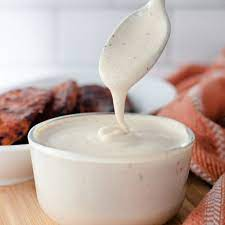

White Sauce

Ingredients
- 4 tbs Flour
- 4 tbs Butter
- 500 ml Milk
- 1/2 tsp Salt
- 1/2 tsp Black pepper
- 1 tsp ginger paste
- 1 tsp oregano
Preparation
- Melt the Butter over low heat in a sauce pan
- Whisk in the Flour
- Add Salt, Black pepper and oregano and mix
- Cook over low heat for 2 minutes and add a little milk to prevent the mixture from clumping
- Slightly turn up the heat and gradually add the remaining milk
- Turn down the heat and cook for another 10 minutes until the sauce thickens.